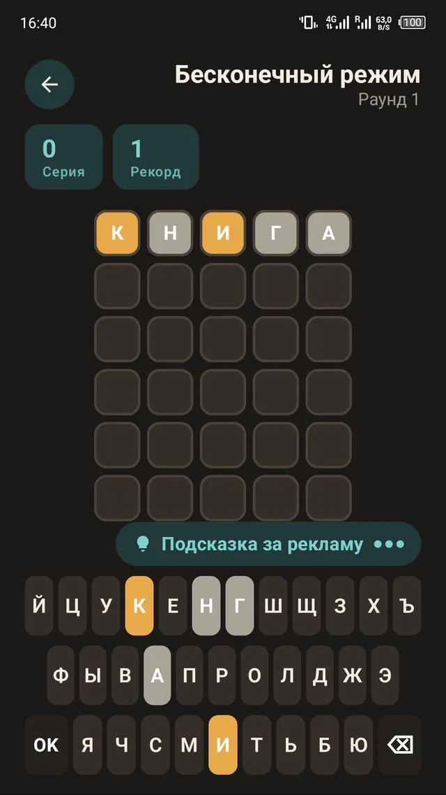
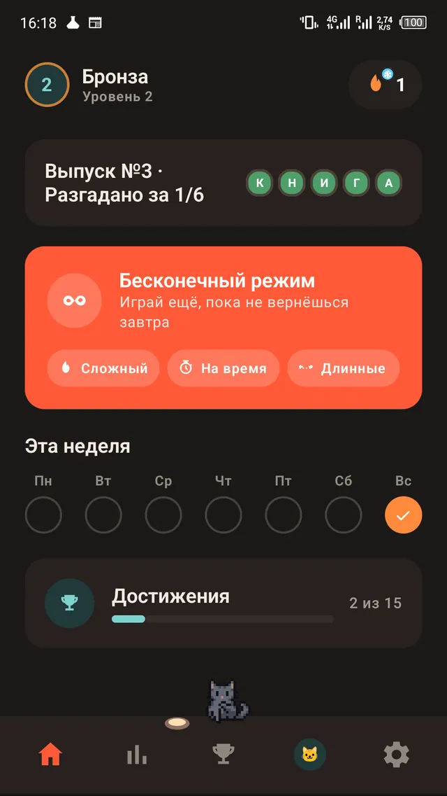

Испытание дня - ежедневная словесная игра с онлайн-рейтингом
Задача
Сделать мобильную игру в духе Wordle - с ежедневной задачей, сериями побед (streak) и возможностью поделиться результатом - и добавить соревновательный элемент: онлайн-таблицу лидеров за день и за неделю, без необходимости регистрации.
Решение
Android-приложение на Kotlin/Jetpack Compose с локальным прогрессом и календарём результатов, плюс отдельный лёгкий серверный бэкенд (Vercel Edge Functions + Redis), который принимает результаты игроков, защищает от подделки и отдаёт рейтинг в реальном времени. Добавлен второй игровой режим с рекламной монетизацией и вход через Google-аккаунт для переноса прогресса между устройствами.
- Ежедневная головоломка с детерминированной генерацией выпусков после исчерпания заготовленного пула
- Локальный прогресс: календарь результатов за 28 дней, статистика серий побед
- Онлайн-лидерборд: дневной и недельный, с редактируемым никнеймом
- Анти-чит без общего секрета на клиенте - у каждой установки свой производный HMAC-ключ для подписи результата
- Второй, «бесконечный» режим с ad-монетизацией и ограничением частоты показа рекламы
- Переключение темы и языка (RU/EN) на лету
Скриншоты


Результат
Рабочее приложение, прошедшее предпродакшн-аудит перед публикацией в RuStore. Игра опубликована - доступна для установки в RuStore под названием «Испытание дня».
Стек
Честно: анти-чит-механизм осознанно не защищает от рутованных устройств - это компромисс ради простоты, а не недосмотр. Бэкенд намеренно минималистичен, без лишней инфраструктуры - для задачи такого масштаба это плюс, а не сложная распределённая система.